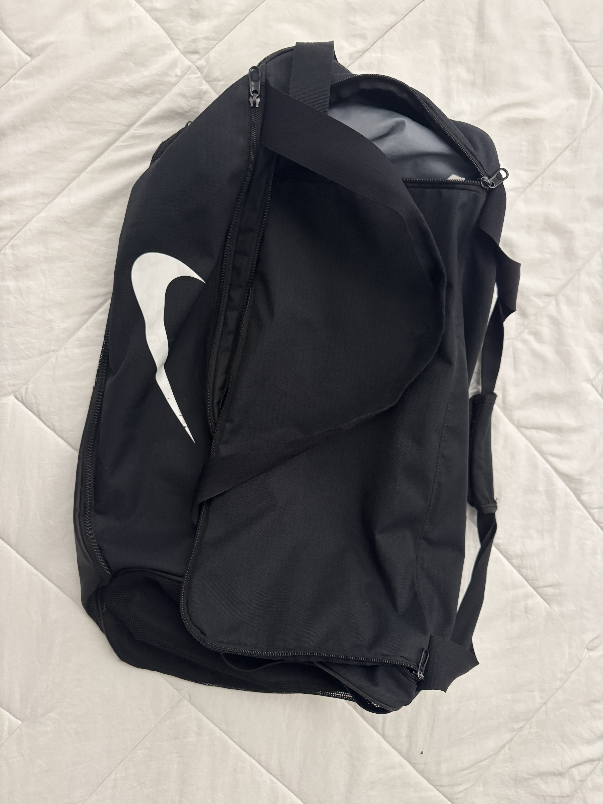
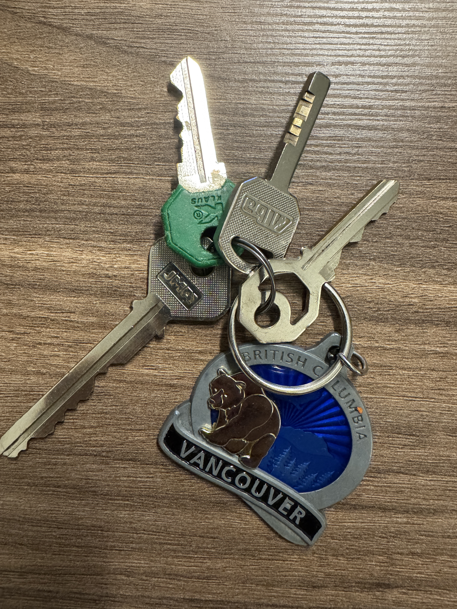
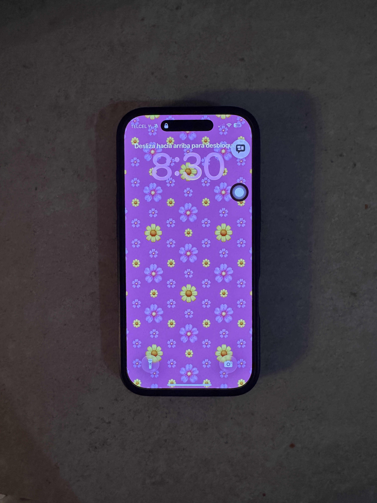

Mochila negra
Perdido
Lugar: Facultad de Ciencias
Fecha: 2 de octubre
Mochila negra encontrada cerca de los salones.

Perdido
Lugar: Facultad de Ciencias
Fecha: 2 de octubre
Mochila negra encontrada cerca de los salones.

Encontrado
Lugar: Biblioteca
Fecha: 3 de octubre
Juego de llaves con un llavero metálico.

Recuperado
Lugar: Cafetería
Fecha: 4 de octubre
Teléfono que ya fue entregado a su propietario.